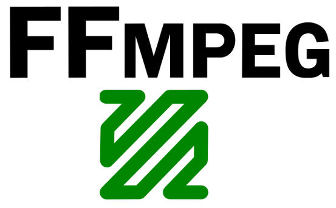

FFMPEG
Fri 23 January 2015

Converting flv to mp4
ffmpeg -i input.flv -c:v libx264 -crf 19 output.mp4 ffmpeg -i input.flv -c:v libx264 -crf 23 -c:a libfaac -q:a 100 output.mp4
Use libx264 with -c:v (codec video) to encode. To improve the video quality, you can use a lower CRF value, e.g. anything down to 18. To get a smaller file, use a higher CRF, but note that this will degrade quality. Anything between 18 and 28 is reasonable with 23 being default.
To improve the audio quality, use a higher quality value (-q:a). For FAAC, 100 is default.
Convert AVI/MOV to MP4
ffmpeg -i input.avi output.mp4
By default it grabs one video stream and audio stream, but you can change this. If your movie has (note, this is not actual output from ffmpeg -i move.mov just an example):
- stream 0:0 h264 video
- stream 0:1 aac (ger)
- stream 0:2 aac (en)
I just want to grab the video and the english audio, I can do:
ffmpeg -i input.avi -map 0:0 -map 0:2 output.avi